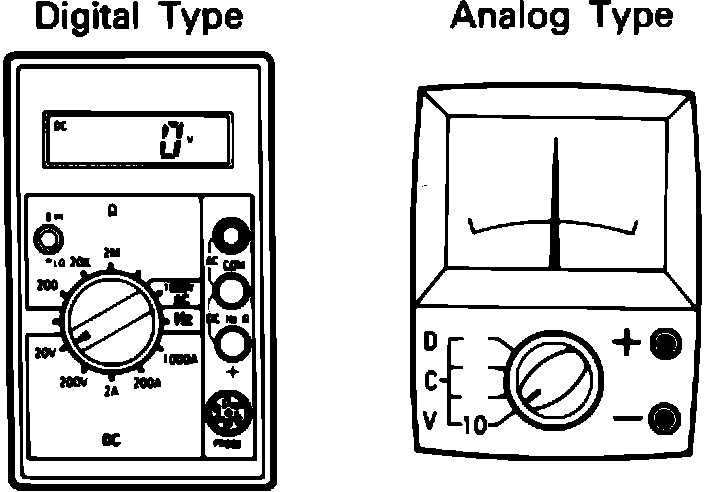
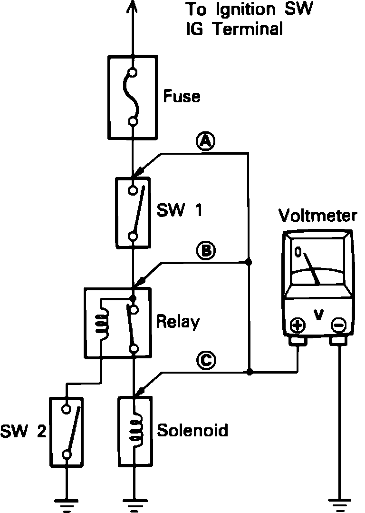

Voltage Check
Meter Types:

1. Use a digital or analog multimeter with a minimum 10k ohm resistance.
Voltage Check:

2. Establish conditions in which voltage should be present at the check point.
EXAMPLE:
a) Ignition SW ON
b) Ignition SW and SW 1 ON
c) Ignition SW, SW1 and Relay ON (SW 2 OFF)
3. Set the volt meter set to the appropriate range for the circuit being tested.
4. Connect the negative lead to a good ground point or the negative battery terminal, and connect the positive lead to the connector or component terminal.
NOTE: This test can be done with a test light if the circuit does not include sensitive electrical components, i.e. electrical control units.